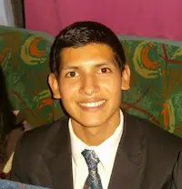

About Me
Hello! My name is Marvin Gálvez. I'm from Lima, Perú. I'm studying Web Fundamentals and computer programming. I'm having fun and getting a lot of new experiences in this course. I enjoy to play the Piano and Music Producing. I am the second of four brothers. I have three brothers and three pets. I'm from The Church of Jesuschrist of the Later-day Saints and I love to serve others, teaching others gave me a lot of experience about knowing people and the great value of their souls. Everyday I try to be abetter person, neighbor, friend, in other words I try to be like Jesuschrist teaches. That is my purpose of life, I believe in purposes in live. At the moment I'm making things that I never make before like studying in University, caring my health a lot, making new body excercices. I am Quiropractor too. I served on a Mission in Cusco, Perú. Now, I serve in The Church like Bishopric Second Conselour and Temple Worker, and I'm glad to introduce myself.
Lima, Perú
Peru is a country in the western South America. This is a beautiful and rich land, where there is a great variety of animal and plant species and, of course, minerals of great value for industry.